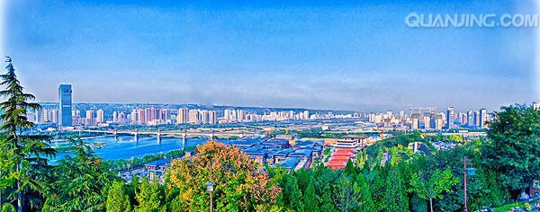
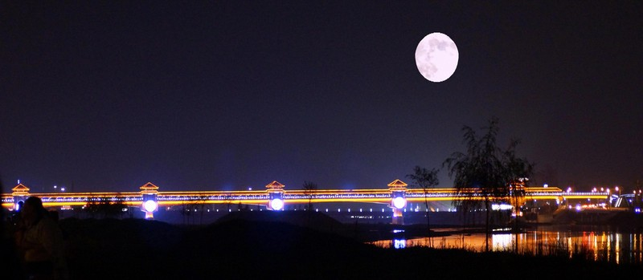
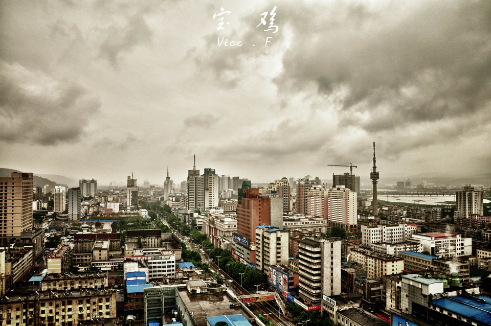

陕西宝鸡
 宝鸡古称陈仓、雍城，誉称“炎帝故里、青铜器之乡”，是关中平原城市群重要节点城市、 关中——天水经济区副中心城。地处关中平原西部， 下辖3区9县，总面积1.81万平方公里。2017年末常住人口378.10万人。
宝鸡历史悠久，是宝学（宝鸡之学）所在地，有2700余年建城史， 出土了晚清四大国宝（毛公鼎、大盂鼎、散氏盘、虢季子白盘）及陈仓石鼓、何尊、逨盘、铜浮屠等文物， 存有西府社火、凤翔木版年画、泥塑等中华工艺
宝鸡是全国文明城市、中国优秀旅游城市、国家森林城市、国家生态园林城市， 中国人居环境奖获得城市。拥有法门寺、太白山国家森林公园、关山草原、 中华石鼓园（宝鸡青铜器博物院）等知名景点及西凤酒、岐山臊子面、宝鸡擀面皮、 豆花泡馍、西府扯面、醋粉等诸多特产或西府小吃。
宝鸡是周秦王朝发祥地。公元前11世纪，周先祖之一的古公亶父率族人迁徙到岐山下的周原（今宝鸡市岐山县）， “古公乃贬戎狄之俗而营筑城郭室屋而邑别居之，作五官有司”（ 《史记·周本纪》），建立了周王朝早期的国家组织。 这就是西周最早的都城岐邑，距今已3200多年。古公亶父被后世尊为太王。周在古公亶父死后的季历和文王时期， 国势发展很快，先后征服了西落鬼戎、始呼、翳徒之戎，邻近的许多部落和方国也归附于周， 巩固了周族在渭水中游的统治，为伐纣灭商，建立西周王朝奠定了基础。
一，唐天宝14年（755年），范阳节度使安禄山起兵反叛，鱼阳鼙动地来的时候，玄宗与贵妃正在华清池温泉水洗凝脂。 叛军破关入陕，直逼长安。玄宗携贵妃杨玉环仓惶出逃，行止马嵬坡驿士兵哗变，玄宗被迫诛杀杨国忠，缢死杨贵妃， 玄宗一行逃到陈仓，关中将士纷纷潜散。这时叛军追尾。玄宗慌不择路，只带几个亲兵钻入山中。爬过一座山峦， 四面岩石陡峭无路可行。此时，山外尘土飞扬，叛军战马嘶鸣，玄宗扑到再地，失声痛哭道：“命休此矣。” 忽然飞来两只山鸡，盘旋之后，款款南飞。众人跟着陈仓山顶，歇入庙中。叛军追到。突然，冰雹倾泻不停 ，砸得叛军溃退而去。说也奇怪，山下雷雨交加，山上却晴空万里。众人再找那两只山鸡，已化为石鸡，昂首屹立。 临别时，玄宗脱口而出：“陈仓，宝地也；山鸟，神鸡也。”宝鸡便因玄宗御口金言：“宝地神鸡”而得名， 此后，陈仓更名为宝鸡，陈仓山始称鸡峰山。
二，秦文公十九年（公元前747年），有个陈仓人猎到一只像羊又像猪的怪兽，准备进献国君。 可是却有两个小孩劝他万不可行。因为这个怪兽，名叫“獍”，刚一出生，就张口吃母，及长， 吸人脑浆，陈仓人一听赶紧用力打头，欲把它杀死。突然，猬开口说话：“你不要杀我，快放了我， 去逮这两个小孩。他们是龙凤胎，都叫陈宝，得男者称霸，得女者称王。” 陈仓人闻言，以为灵异， 放下猬去逮小孩。可是两个小孩忽然变成两只神鸡，一只飞到了河南南阳，千年之后转生为汉光武帝刘秀， 另一只直飞陈仓山顶，化为石鸡，体大如羊，光洁如玉。陈仓人放了猬，猬感其德，衔草掩护石鸡。 陈仓山从此林密草茂，幸赖石鸡之福，石鸡默默，以俟盛世。在唐至德二年（757年），陈仓山复闻神鸡啼鸣， 声传十余里。当是时也，正是安史之乱的紧要关头。玄宗避乱四川，太子李亨在灵州提前登基，史称肃宗，挂帅平叛 。闻神鸡鸣叫，唐军节节胜利，叛军一蹶不振。肃宗认为神鸡为国之宝，鸡鸣乃是吉祥之兆，随改陈仓为宝鸡， 沿用至今。